This chapter deals with religious trauma, extremism, deconversion grief, faith-based abuse, and existential crisis — topics that can directly mirror players' deepest wounds. Full Lines & Veils conversation required. A player may declare their character was not present for any religiously-charged scene. The GM must never force a player to resolve a scenario that parallels their own traumatic religious experience. If a player goes red light, the scene ends immediately.
Introduction
Religion and spirituality are not a single checkbox on a character sheet. They are ongoing practices, communities, financial commitments, and identity anchors that shape a character's daily choices, social network, and stress load. In Reality RPG, faith is modeled as a lifestyle system with time costs, money costs, community benefits, and stress effects — just like every other dimension of real life.
Whether your character is a devout parishioner, a recovering member of a high-control group, a spiritual-but-not-religious meditator, or someone wrestling with an existential crisis triggered by tragedy, this page provides the mechanics to make those experiences concrete, meaningful, and mechanically impactful.
⚔️ Fantasy RPGs
Religion = a deity you pray to for spell slots. Clerics gain power from faith. Gods occasionally smite people. Temple = a place to resupply healing potions.
🏠 Reality RPG
Religion = weekly time commitment, 10% of income in tithes, a social network you can lean on (or flee from), a moral framework that shapes every decision, and a source of both profound comfort and deep trauma depending on your experience.
1. Detailed Religious Practice
Beyond the checkbox. Religious practice in Reality RPG is a set of recurring commitments — each with time costs, financial costs, and mechanical effects. A character's level of practice is tracked on a Devotion Level from 0 (no practice) to 5 (fully committed).
Devotion Levels
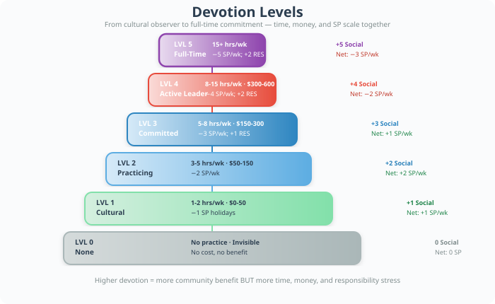
Weekly Worship Attendance
The backbone of religious practice. Attending weekly services (Sunday worship, Friday Jumu'ah, Saturday Shabbat, Sunday Buddhist services, etc.) is a 3–5 hour weekly commitment including travel, parking, childcare logistics, and the service itself.
Time cost: 3–5 hours per week (1 hour travel + 2 hours service + 1 hour community time)
Money cost: $0–20 per visit (offering plate, parking, childcare)
SP effect: −2 SP per attended service (restorative community experience). Missing 3+ consecutive weeks without cause: +1 SP per missed week (guilt, isolation, community concern).
Social effect: Regular attendance builds Community Trust — a resource that can be spent on favors, job leads, emotional support, and crisis intervention.
Daily Prayer & Meditation Routines
Different traditions structure daily practice differently:
Islam (Salah)
5 daily prayers · ~75 min/day
SP: −1 SP/day if all 5 completed
Bonus: +1 to RES checks for 1 hr after each prayer
Christianity (Prayer)
Morning/evening prayer · 10–30 min/day
SP: −1 SP/day if consistent
Bonus: +1 to RES checks in the morning
Judaism (Tefillah)
3 daily services · 20–45 min each
SP: −1 SP/day for full observance
Bonus: +1 RES; +1 INT for Torah study
Buddhism (Meditation)
Sitting + walking meditation · 30–60 min/day
SP: −2 SP/day; +1 RES mod (long-term)
Bonus: +2 to RES checks after session
Hinduism (Puja)
Morning/evening puja, mantras · 15–30 min/day
SP: −1 SP/day
Bonus: +1 to RES checks
Religious Study as Skill Development
Bible study, Torah study (Talmud/Torah classes), Quran study (Hifz/Tajweed), Dharma study, and theological education function as skill development activities in Reality RPG:
Time investment: 2–4 hours per week for lay study; 10+ hours for serious theological study
Skill tracked as: Religious Literacy (a sub-skill of INT)
Progress: Each month of consistent study: roll 2d10 + INT mod vs TN 12. On success, gain 1 point of Religious Literacy (max = INT × 3).
Benefits: Each point of Religious Literacy grants +1 to Social checks when discussing theology, +1 to RES checks when facing moral dilemmas within your tradition, and allows the character to teach others (generating income or community standing).
Fasting Observances
Fasting is a near-universal religious practice with real mechanical weight:
Ramadan
Islam · 29–30 days, dawn to sunset
Physical: −1 VIG mod during fast; fatigue after week 1
Spiritual: +2 RES checks; deepens Devotion Level
SP: −3 SP at conclusion
Lent
Christianity · 40 days (6 weeks)
Physical: Variable (giving up food, habits, practices)
Spiritual: +1 RES checks; self-discipline training
SP: −2 SP at Easter if completed; +2 SP if abandoned
Yom Kippur
Judaism · 25 hours (full fast)
Physical: −2 VIG mod; headache, weakness
Spiritual: +3 RES checks; atonement
SP: −4 SP at conclusion
Ashura / Day of Arafah
Islam · 1 day (partial or full)
Physical: −1 VIG mod
Spiritual: +2 RES checks
SP: −2 SP at conclusion
Ekadashi
Hinduism · Twice monthly (1 day)
Physical: −1 VIG mod on fasting days
Spiritual: +1 RES checks
SP: −1 SP per completed fast
Uposatha
Buddhism · Quarterly full-day
Physical: −1 VIG mod
Spiritual: +2 RES checks; mindfulness deepening
SP: −2 SP at conclusion
Religious Holidays as Structured Events
Major religious holidays are structured life events with time, money, and social costs:
Each major holiday generates a Holiday Stress Event:
Time cost: 1–3 days (preparation + observance + family gathering)
Money cost: $200–2000+ (food, gifts, travel, clothing, donations)
SP effects: Roll 2d10 + RES mod vs TN 12. On success: −2 SP (meaningful celebration). On failure: +2 to +5 SP (family conflict, financial stress, obligation overload, religious anxiety).
Family gathering modifier: If the character has strained family relationships, add +2 to the TN. If the character is Devotion Level 3+, subtract −1 from the TN (community support buffer).
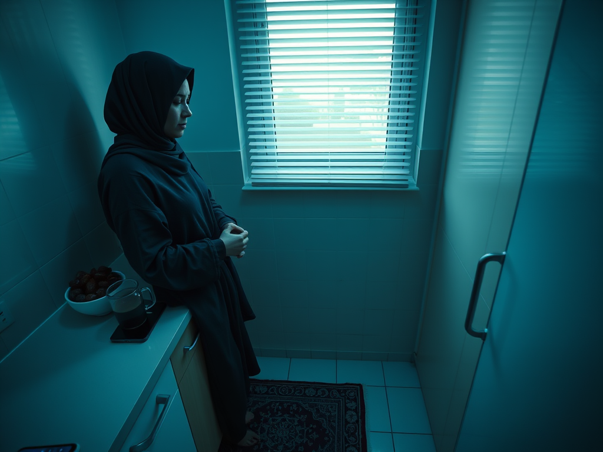
Amara is a 32-year-old Muslim software engineer, Devotion Level 3 (Committed). Ramadan begins in July during peak work season.
Time cost: Each day she wakes before dawn for Suhoor (~45 min), fasts during work hours, and prays Isha after work (~30 min). Total daily extra time: ~1.5 hours. Over 30 days: 45 extra hours of life management.
Physical effect: VIG mod drops by −1 during daylight hours. Amara rolls 2d10 + 3 (VIG mod) − 1 (fast) = 2d10 + 2 vs TN 10 for daily energy checks. On a bad roll (she rolls a 2 and a 3, total 5 + 2 = 7), she fails her energy check on Day 14 and gets a migraine. +1 SP.
Spiritual effect: She maintains all 5 daily prayers consistently. Each day: −1 SP. Over 30 days: −30 SP total from prayer discipline.
Eid al-Fitr: The holiday event. Money cost: $800 (new clothes, Eid gift money for family, hosting dinner). Holiday Stress Event: 2d10 + 4 (RES mod) vs TN 11 (−1 for Devotion 3). She rolls 6 and 7 = 13 + 4 = 17. Success. −2 SP. Eid is a joyous, meaningful celebration that reinforces her identity and community bonds.
Net Ramadan result: −30 SP (prayer) + 1 SP (migraine) − 2 SP (Eid) = −31 SP over the month. Ramadan was net restorative for Amara despite the physical cost.
2. Religious Community Dynamics
A house of worship — church, mosque, temple, synagogue, gurdwara, monastery — is not just a building. It is a social network, support system, and moral authority that operates in parallel with the character's secular life.
Community Trust Resource
Regular participation generates Community Trust, a trackable resource from 0–10:
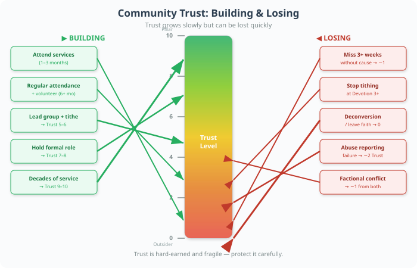
Outsider
Attendee
Member
Trusted
Leader
Pillar
How to climb: Outsider → Attend services 1–3 mo → Attend regularly 6+ mo + volunteer → Volunteer regularly + lead group + tithe → Hold formal role → Decades of service / ordination. Benefits scale: None → Basic connections → Small favors + job leads → Meaningful favors + pastoral care → Community resources + moral authority → Entire network at your command.
Leadership Roles
Deacon / Elder
Christianity · 5–10 hrs/week
Pastoral care, committee work, visiting the sick, organizing events
Effect: Community Trust +2/yr; +2 Social within community; +3 SP/week responsibility stress
Imam
Islam · 15–40 hrs/week
Lead prayers, deliver sermons, marriage/counseling, community education
Effect: Community Trust +3/yr; may receive stipend; +5 SP/week leadership burden
Rabbi
Judaism · 20–40 hrs/week
Torah teaching, lifecycle events, pastoral counseling, community governance
Effect: Community Trust +3/yr; may receive salary; +5 SP/week emotional labor
Priest / Pastor
Christianity · 30–50 hrs/week
Sermons, sacraments, counseling, administration, visitation
Effect: Community Trust +3/yr; receives salary; +5 SP/week; burnout risk (annual roll vs TN 14)
Monk / Nun
Buddhism, Christianity, Hinduism · Full-time
Prayer, meditation, study, community service, celibacy
Effect: Devotion auto-5; +3 RES mod (max); income from alms/stipend; +3 SP/week renunciation stress
Ustaz / Teacher
Islam, various · 10–20 hrs/week
Quran teaching, religious education, youth mentoring
Effect: Community Trust +2/yr; Religious Literacy grows rapidly; +3 SP/week teaching responsibility
Tithing & Donations
Most religious traditions expect financial contribution. The standard is 10% of income (tithe in Christianity, Zakat in Islam — though Zakat is calculated differently, at 2.5% of savings above a threshold).
Standard tithe: 10% of gross monthly income. For a character earning $4,000/month: $400/month goes to their house of worship.
Zakat (Islam): 2.5% of savings above nisab threshold (~$5,000 in savings). If savings = $50,000: Zakat = $1,125/year.
Ma'aser (Judaism): 10% of income to charity/charitable causes, not just synagogue.
Dana (Buddhism/Hinduism): Voluntary; no fixed percentage. Devotion Level determines typical giving.
Failure to tithe when expected: +2 SP per month (guilt, community pressure). At Devotion Level 3+, missing tithing for 3+ months triggers a Community Confrontation Event: roll 2d10 + RES mod vs TN 14 to handle the confrontation without losing Community Trust.
Community Service Expectations
Beyond attendance and tithing, active communities expect volunteer labor: food drives, visiting the sick, youth programs, building maintenance, holiday organizing, welcoming newcomers. This is real work — often 2–5 hours per month at Devotion Level 2, scaling up to 10+ hours at Level 4.

Marcus is a 45-year-old deacon at his Baptist church (Devotion Level 4, Community Trust 7). The church is planning a community outreach event, and Marcus has been assigned to lead logistics.
Time cost: Over 3 months, Marcus spends ~8 hours/week on planning: meetings, phone calls, vendor coordination, volunteer scheduling. Total: 96 hours of unpaid labor.
SP load: As a leader, Marcus already carries +3 SP/week from responsibility stress. The event adds +2 SP/week for the planning period. Total weekly SP increase: +5 SP/week × 12 weeks = +60 SP over the planning period.
Offsetting benefits: Marcus gets −4 SP/week from worship attendance and community. Net weekly SP: +5 − 4 = +1 SP/week. Manageable but accumulating.
The event day: A storm threatens to cancel the outdoor component. Marcus rolls 2d10 + 4 (EXP mod) + 2 (leadership bonus) vs TN 13 to manage the crisis. He rolls 8 and 5 = 13 + 6 = 19. Critical success. He pivots to indoor activities, the event proceeds, and Community Trust increases to 8. −3 SP from the meaningful accomplishment.
Aftermath: The event strengthens Marcus's standing but he notices his marriage suffering from the time commitment. His spouse raises the issue: a Relationship Stress Event triggered by religious overcommitment.
Dealing with Problematic Community Members
Every community has difficult dynamics: the gossiping member, the controlling elder, the person who crosses boundaries, the factional politics. Characters may need to navigate:
- Boundary setting: Roll 2d10 + PRC mod vs TN 12 to assert boundaries without losing Community Trust. Failure: you either lose trust (said no too harshly) or stayed silent (+2 SP from resentment).
- Factional conflict: When community splits on a political or doctrinal issue, the character must choose a side or remain neutral. Neutrality: −1 Community Trust from both sides. Picking a side: +2 Community Trust with your faction, −2 with the other.
- Abuse reporting: If a leader is abusive, reporting them carries risk. Roll 2d10 + RES mod + PRC mod vs TN 15. On success: the situation is addressed, +2 SP from the stress of doing the right thing, but Community Trust may drop as some members defend the abuser. On failure: the report is dismissed, +5 SP (retraumatization), and the character may need to leave the community.
3. Deconversion & Loss of Faith
Leaving a religion is one of the most profound life events a character can experience. It is not simply changing an opinion — it is losing a worldview, a community, an identity, and often family relationships.
The Deconversion Process
Deconversion typically unfolds over months or years in stages:
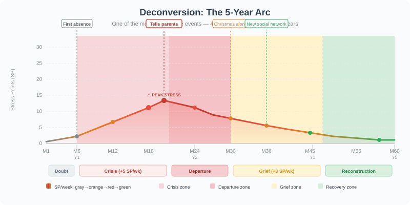
When the character tells their family/community they are leaving the faith, a Major Life Event triggers:
Immediate SP impact: +10 SP (applied over 3 sessions for pacing)
Family reaction: Roll 2d10 on the Family Reaction Table:
Sarah, 28, grew up in a conservative evangelical community (Devotion Level 3, Community Trust 6). Over 2 years of college, she developed doubts about core doctrines.
Stage 1 — Doubt (Months 1–6): Sarah begins secretly reading apologetics critiques and deconversion forums. She still attends church but sits in the back. +2 SP/week × 24 weeks = +48 SP. She rolls 2d10 + 3 (RES mod) − 1 (doubt penalty) = 2d10 + 2 vs TN 10 for weekly stability checks. On Week 12 she fails (rolls 1 and 4 = 7) and has a panic attack before Sunday service. She doesn't go. First absence.
Stage 2 — Crisis (Months 6–18): Sarah stops attending. Her mother notices and calls weekly. Each call: +2 SP. She joins r/exchristian online. +5 SP/week × 52 weeks = +260 SP. This is overwhelming — Sarah's SP is at 18/25 (her max). She's one bad week away from a Mental Health Crisis Event.
Intervention: Sarah starts attending a secular mutual aid group (similar to AA but for ex-faith). This provides −2 SP/week, bringing her net to +3 SP/week. Manageable but still climbing.
Stage 3 — Departure: Sarah tells her parents at Easter dinner. +10 SP immediately. Family Reaction roll: 2d10 = 3 and 4 = 7. Anger and Disappointment. Her father says "you're throwing away your salvation." Her mother cries. +3 SP per argument × 3 arguments that night = +9 SP. Sarah is now at 24/25 SP — critical.
Stage 4 — Grief: The next Christmas is devastating. +5 SP for the holiday. Sarah spends it alone, watching deconversion vlogs.
She rolls 2d10 + 2 (depleted RES) vs TN 12 for a depression check. Rolls 2 and 6 = 10. Failed. She enters a depressive episode: −2 to all checks for 1 month, +2 SP/week.
Stage 5 — Reconstruction: Over the next year, Sarah builds a new social network through her mutual aid group and a hiking club. She writes about her experience on a blog. By Month 36, SP has stabilized at 8/25. She visits her parents once a month — tense but civil. Community Trust with her church = 0. Secular Community Trust = 4.
Net deconversion cost: ~400+ SP accumulated over 3 years. This is one of the most stressful life events in the game — intentionally, because it is one of the most stressful life events in reality.
4. Religious Trauma
For characters raised in abusive, controlling, or fear-based religious environments, faith is not a source of comfort — it is a source of ongoing psychological injury. Religious trauma is recognized by mental health professionals as a real form of emotional abuse.
Types of Religious Trauma
Fear-based Conditioning
Hellfire, damnation, divine punishment threats from childhood
Common in: Fundamentalist Christianity, strict Islam, ultra-Orthodox Judaism
SP: +3 SP on religious imagery; +5 SP on holidays
Long-term: Chronic anxiety; nightmares; religious PTSD symptoms
Shame-based Control
Sexual shame, body shame, moral policing; "sin" as identity
Common in: Many conservative traditions
SP: +3 SP in situations triggering shame; body image issues
Long-term: Difficulty with intimacy; self-worth tied to religious performance
Emotional Manipulation
"God told me," spiritual bypassing, love withdrawal as punishment
Common in: High-control groups, cults, authoritarian churches
SP: +4 SP when authority figures use spiritual language
Long-term: Trust issues; difficulty discerning genuine care from manipulation
Physical/Sexual Abuse by Leaders
Abuse by clergy, teachers, or community members
Common in: Any institution with power imbalances
SP: +10 SP (single event); triggers full trauma protocol
Long-term: May require years of therapy; +5 SP around any religious setting
Doctrinal Trauma
"Your LGBTQ+ loved one is damned"; "Your abortion choice means you're cursed"
Common in: Any dogmatic tradition
SP: +5 SP when topic arises; identity-level injury
Long-term: Complete break from tradition; deep grief for lost certainty
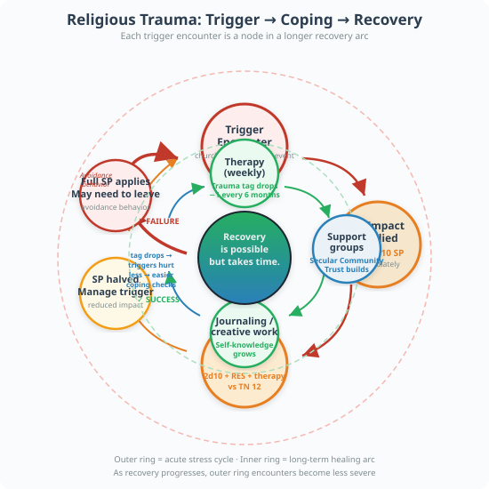
Characters with religious trauma carry a Trauma Tag on their sheet. This tag generates SP whenever the trigger is encountered:
- Trigger encounter: GM announces a trigger (e.g., "you walk past a church and hear hymns"). Player adds the trauma's SP value immediately.
- Coping check: Player may roll 2d10 + RES mod + therapy bonus vs TN 12 to manage the trigger. On success: SP is halved. On failure: full SP applies, and the character may need to leave the situation.
- Avoidance: Characters often develop avoidance behaviors (not attending family events with religious components, changing routes to avoid churches, etc.). This costs time and limits social opportunities.
Healing from Religious Trauma
Recovery is possible but takes time and intentional work:
Therapy (trauma-informed)
1 hr/week · $50–200/session
SP: −1 SP/week; trauma tag drops by 1 every 6 months
Effect: Long-term recovery; gains "Therapy Bonus" +1 to RES checks
Support Groups (ex-faith)
2 hrs/week · Free–$20/month
SP: −2 SP/week; validation reduces isolation
Effect: Builds Secular Community Trust
Retreats (secular mindfulness)
1–3 days · $200–2000
SP: −5 SP per retreat
Effect: Reset button; significant SP reduction but expensive
Journaling / Creative Expression
30 min/day · Free
SP: −1 SP/week if consistent
Effect: Self-directed healing; builds self-knowledge
Reclaiming Spirituality (SBNR)
Variable time/cost
SP: −2 SP/week once stable
Effect: Transforms trauma into growth; see Section 7
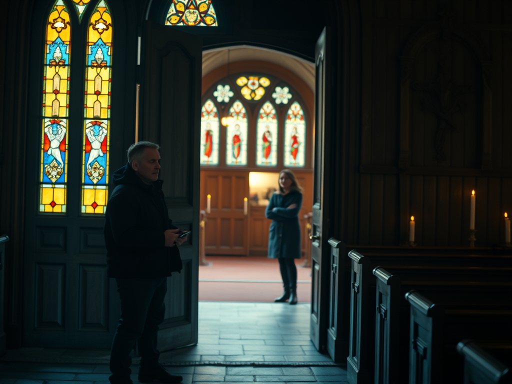
James, 35, was raised in a fundamentalist group that practiced fear-based teaching. He left at 22 but carries a Trauma Tag: Fear of Damnation (+5 SP when exposed to hellfire imagery or judgmental religious language).
Trigger event: James's sister invites him to Christmas Eve service. He hasn't been inside a church in 13 years. The GM describes the stained-glass windows, the hymns, the pastor's sermon about "God's judgment on the wicked."
Trauma trigger: +5 SP immediately. James's SP goes from 6 to 11.
Coping check: James has been in therapy for 2 years (Therapy Bonus +2). He rolls 2d10 + 3 (RES) + 2 (therapy) vs TN 12. Rolls 4 and 7 = 11 + 5 = 16. Success. SP is halved: only +3 SP instead of +5. James stays for one hymn, then quietly leaves. He texts his sister: "I love you but I can't stay." She understands.
Aftermath: That night James journal about the experience (−1 SP). He talks to his therapist the next week about it (−1 SP). Net SP for the event: +3 − 1 − 1 = +1 SP. A manageable cost for maintaining the relationship with his sister while honoring his boundaries.
Long-term arc: Over the next year, James's trauma tag drops from +5 SP to +3 SP to +2 SP as therapy works. He doesn't go back to church, but he stops having nightmares about hell. The trauma is healing — slowly, realistically.
5. Interfaith Relationships
Relationships between people of different faiths (or faith and non-faith) are one of the most common sources of both beauty and conflict in real life. In the US alone, ~20% of married couples are interfaith.
The Interfaith Negotiation Framework
Every interfaith relationship must navigate these questions — and each generates a Relationship Negotiation Event:
Whose holidays?
Arises: First holiday season · Difficulty: Low–Medium
SP: ±2 SP · Cost: Both attend unfamiliar traditions
Raising children
Arises: Starting a family · Difficulty: High
SP: +3 to +5 if unresolved · Cost: Explicit agreement; may require conversion
Family approval
Arises: Meeting families · Difficulty: Medium–Very High
SP: +2 to +5 per encounter · Cost: Boundary-setting; risk of estrangement
Dietary restrictions
Arises: Daily life · Difficulty: Low
SP: ±1 SP · Cost: Learning each other's food; compatible restaurants
Death and burial rites
Arises: Family member dies · Difficulty: Very High
SP: +5 SP (compounded with grief) · Cost: Decide whose rites to follow
Daily spiritual practice
Arises: Ongoing · Difficulty: Low–Medium
SP: ±1 SP/week · Cost: Respecting practice time; occasionally joining
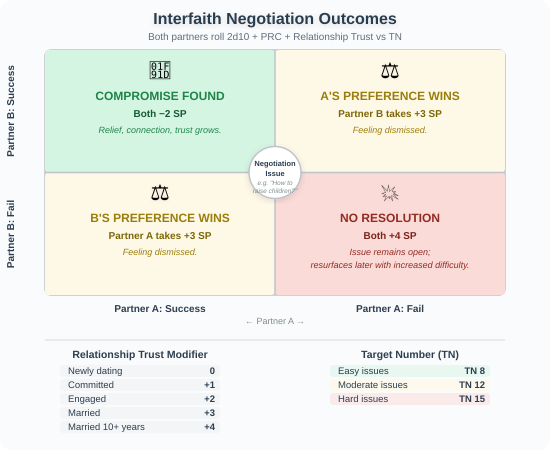
When an interfaith couple faces a negotiation event:
Both players roll 2d10 + PRC mod + Relationship Trust vs TN set by the GM (8 for easy issues, 12 for moderate, 15 for hard).
Both succeed: Compromise found. −2 SP for each (relief, connection).
One succeeds, one fails: The successful partner's preference wins, but the other partner takes +3 SP (feeling dismissed).
Both fail: No resolution. +4 SP for each. The issue remains open and may resurface later with increased difficulty.
Relationship Trust modifier: Newly dating (0), Committed (+1), Engaged (+2), Married (+3), Married 10+ years (+4). This represents accumulated goodwill that makes compromise easier.
Layla is Muslim (Devotion Level 3). David is Jewish (Devotion Level 2). They've been engaged for 6 months. They're facing the "how will we raise the children" conversation.
Negotiation Event — High difficulty (TN 15):
Layla rolls 2d10 + 4 (PRC) + 2 (engaged) = 2d10 + 6. She rolls 7 and 6 = 13 + 6 = 19. Success.
David rolls 2d10 + 3 (PRC) + 2 (engaged) = 2d10 + 5. He rolls 3 and 5 = 8 + 5 = 13. Failed.
Result: Layla's preference (raising children Muslim with Jewish cultural awareness) wins the negotiation, but David takes +3 SP from feeling that his tradition is being sidelined. They compromise on the details — the children will be raised with both traditions, but the primary religious identity will be Muslim. David accepts this after a difficult conversation. He takes the +3 SP but also gains +1 Relationship Trust from the honesty of the discussion.
Family reaction: Layla's father is fine with it. David's mother is hurt that her grandchildren won't be raised Jewish. Family Approval Event: David rolls 2d10 + 3 (PRC) vs TN 13 to manage his mother's disappointment. Rolls 5 and 8 = 13 + 3 = 16. Success. His mother is sad but accepts it. +1 SP for David from the emotional difficulty, but the relationship is preserved.
Net result: David: +3 SP (negotiation) + 1 SP (family) = +4 SP. Layla: −2 SP (negotiation success). The couple's Relationship Trust increases to 3. They've navigated one of the hardest interfaith conversations successfully.
6. Religious Extremism
Religious extremism — whether fundamentalist, militant, or ideologically rigid — represents a dangerous path that can consume a character's life. This section covers radicalization, life within extremist groups, and the difficult process of leaving.
Radicalization Mechanics
Radicalization is rarely sudden. It's a gradual process that exploits existing vulnerabilities:
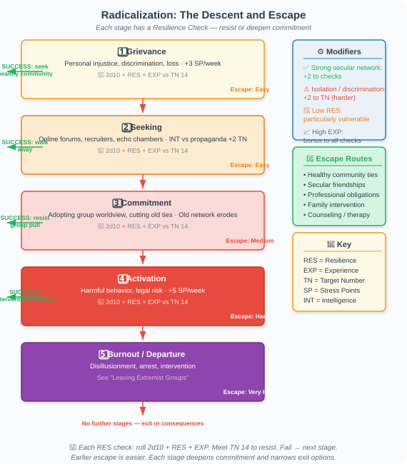
At each stage, the GM may call for a Resilience Check: 2d10 + RES mod + EXP mod vs TN 14. On success, the character resists moving to the next stage. On failure, they deepen their commitment.
Modifiers: Characters with strong secular social networks gain +2. Characters experiencing isolation, discrimination, or trauma take +2 to TN. Characters with low RES are particularly vulnerable.
Leaving Extremist Groups
Departing from an extremist group is one of the hardest things a person can do. It involves:
- Social death: Everyone you knew is now an enemy. Community Trust with the group turns to Hostility.
- Safety concerns: Roll 2d10 on the Threat Table. On 2–5: the group attempts to intimidate or harm the departing member.
- Identity reconstruction: The character must rebuild their entire sense of self from scratch. This mirrors the Deconversion process but with higher stakes and less support infrastructure.
- Legal consequences: If the group engaged in illegal activity, the character may face investigation, prosecution, or surveillance.
Leaving an extremist group generates a Critical Life Event:
Immediate SP: +10 SP (fear, uncertainty, guilt)
Safety check: 2d10 + DXT mod vs TN 14. On failure: the character experiences a threat (stalking, harassment, or worse). +5 SP and may need to relocate.
Support check: 2d10 + Social Network score vs TN 12. On success: the character finds a support system (former members, deradicalization programs, family who still cares). On failure: the character is isolated and must navigate alone (+3 SP/week from isolation).
Recovery timeline: 2–5 years minimum. Each year: roll 2d10 + RES mod vs TN 12. Each success reduces SP by 2 points and represents a step toward reintegration.
7. Spiritual But Not Religious (SBNR)
The SBNR path is one of the fastest-growing spiritual orientations in the developed world. It represents a rejection of institutional religion while retaining a sense of meaning, wonder, and practice.
SBNR Practices & Their Mechanics
Meditation (secular mindfulness)
Time: 30 min/day = 3.5 hrs/week · Cost: Free–$20/month (app)
SP: −2 SP/week; +1 to RES mod after 6 months of practice
Bonus: +1 to all checks in the hour following meditation; improved sleep
Evidence: Strong — decades of clinical research
Nature immersion
Time: 2–4 hrs/week · Cost: Free
SP: −1 SP per session; cumulative −2 SP/week if regular
Bonus: +1 to VIG checks (physical activity); creative inspiration
Evidence: Strong — ecotherapy research
Yoga (as spiritual practice)
Time: 2–5 hrs/week · Cost: $50–200/month (studio)
SP: −2 SP/week; body awareness
Bonus: +1 to VIG mod (physical fitness); flexibility benefits
Evidence: Strong — physical + mental benefits documented
Journaling / contemplative writing
Time: 30 min/day · Cost: Free
SP: −1 SP/week if consistent
Bonus: Self-knowledge; pattern recognition; +1 to INT checks for self-reflection
Evidence: Moderate — expressive writing research
Astrology
Time: 1–2 hrs/week · Cost: Free–$50/month
SP: −1 SP/week (comfort from narrative meaning)
Bonus: Conversational social lubricant; community at astrology events
Evidence: None — placebo/cultural practice only
Tarot reading
Time: 1–2 hrs/week · Cost: $20–100/month (decks, classes)
SP: −1 SP/week (reflective practice)
Bonus: Self-reflection tool; social activity; may develop as paid skill
Evidence: None — reflective/psychological tool, not predictive
Crystal healing / energy work
Time: Variable · Cost: $50–500 (collection, classes)
SP: −1 SP/week (placebo comfort)
Bonus: Tactile grounding practice; community at workshops
Evidence: None — placebo/cultural practice only
Secular retreats (Insight Timer, etc.)
Time: 1–3 days occasionally · Cost: $200–2000
SP: −5 SP per retreat
Bonus: Reset button; significant perspective shift
Evidence: Moderate — retreat-style interventions show benefit
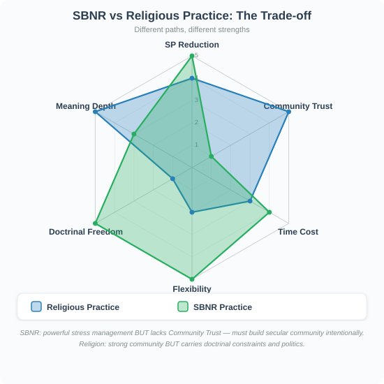
A fully committed SBNR character might have: Meditation (daily) + Yoga (3x/week) + Nature walks (weekly) + Journaling (daily). Total time: ~8 hours/week. Total cost: $50–200/month. Total SP benefit: −6 to −8 SP/week. This is a powerful stress management toolkit that rivals or exceeds what religious practice provides, with the advantage of no doctrinal constraints or community politics.
Trade-off: SBNR lacks the Community Trust resource that religious practice provides. An SBNR character must intentionally build secular community (clubs, volunteer groups, mutual aid) to gain equivalent social support.
The Meditation Skill
For characters who practice meditation seriously, track a Meditation Skill from 0–5:
8. Existential & Spiritual Crisis
Existential crisis is the dark night of the soul — when a character's fundamental assumptions about meaning, purpose, and the nature of reality are shaken. Unlike deconversion (which is specifically about leaving organized religion), existential crisis can affect anyone: the devout, the secular, the spiritual, the skeptical.
Triggers for Existential Crisis
Death of a loved one
Confronting mortality; "why them? why now?"
Severity: Very High · Duration: 6 months–2 years
SP: +10 SP (overlapping with grief)
Terminal diagnosis (self or loved one)
"What does any of this matter if we die?"
Severity: Extreme · Duration: Duration of illness
SP: +15 SP
Midlife reckoning
"Is this all there is? Did I make the right choices?"
Severity: High · Duration: 3–12 months
SP: +5 to +8 SP
Major failure / loss of purpose
Career collapse; creative block; "who am I without my work?"
Severity: High · Duration: 3–6 months
SP: +5 to +10 SP
Witnessing suffering / injustice
"How can good people allow this?" — the problem of evil
Severity: Medium–High · Duration: Weeks–months
SP: +3 to +6 SP
Profound beauty / awe
"This is too beautiful to be meaningless" — positive crisis
Severity: Low–Medium · Duration: Days–weeks
SP: +2 SP initially (overwhelming), then −3 SP (meaning restored)
Philosophical awakening
Reading, conversation, or experience that shatters assumptions
Severity: Medium · Duration: Months
SP: +4 to +7 SP
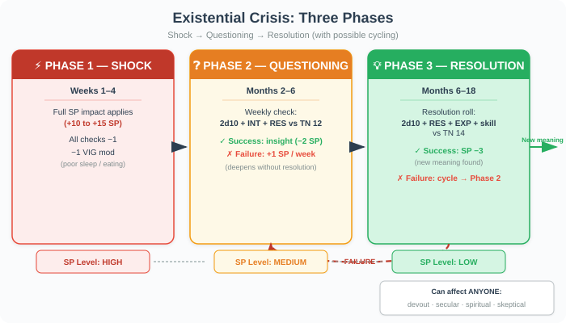
An existential crisis is a Major Life Event that affects the character across all domains:
Phase 1 — Shock (Weeks 1–4): Full SP impact applies. All checks take −1. The character may neglect self-care (−1 VIG mod from poor sleep/eating).
Phase 2 — Questioning (Months 2–6): The character actively searches for meaning. Each week: roll 2d10 + INT mod + RES mod vs TN 12. On success: the character finds a meaningful insight or connection (−2 SP). On failure: the questioning deepens without resolution (+1 SP/week).
Phase 3 — Resolution (Months 6–18): The character either finds a new framework (religious, philosophical, secular) or accepts uncertainty. Resolution roll: 2d10 + RES mod + EXP mod + any relevant skill vs TN 14. On success: new meaning found. SP drops by 3 points. On failure: the crisis persists and may cycle back to Phase 2.
Paths Out of Crisis
Deepening faith
Returning to or intensifying religious practice
Requires: Access to a religious community; willingness to commit
Outcome: Devotion Level increases; SP resolves through community and ritual; new certainty
SBNR exploration
Finding meaning through meditation, nature, art
Requires: Time to experiment; openness to non-dogmatic approaches
Outcome: Meditation Skill develops; SP resolves through self-directed practice; flexible meaning
Philosophical/secular meaning
Existentialism, humanism, absurdism — finding meaning without transcendence
Requires: INT checks to engage with philosophy; reading, discussion
Outcome: Intellectual framework for meaning; SP resolves through understanding; no dogmatic constraints
Service / contribution
Finding meaning through helping others
Requires: Community connection; volunteer work
Outcome: Purpose restored through action; SP resolves through contribution; builds Community Trust
Creative expression
Art, writing, music as meaning-making
Requires: Time and space for creativity
Outcome: Cathartic; SP resolves through expression; may develop into a skill or career
Unresolved / chronic
Some crises don't resolve neatly
Requires: —
Outcome: Ongoing +1 SP/week from existential anxiety; character lives with the question; can still function but carries the weight

Elena, 42, is a secular humanist who has never been religious. Her 8-year-old son dies in a car accident. This triggers both Grief (covered in the Death & Grief chapter) and an Existential Crisis — because her son's death shatters her assumption that "good things happen to good people" and that the universe is fundamentally fair.
Phase 1 — Shock: +15 SP from the crisis (on top of grief SP). Elena's SP max is 25 (20 + 1 RES mod × 5). She's at 22/25 — barely holding on. All checks take −1. She can't sleep, can't eat. VIG mod drops to −1.
Phase 2 — Questioning (Months 2–6): Elena starts reading philosophy at night. Camus, Viktor Frankl, Martha Nussbaum. Each week she rolls 2d10 + 4 (INT) + 1 (RES) vs TN 12. For the first 8 weeks, she fails repeatedly (grief clouds her thinking). +1 SP/week × 8 = +8 SP. But at Week 9, she reads Frankl's Man's Search for Meaning and something clicks. Success: −2 SP.
Phase 3 — Resolution (Months 6–12): Elena doesn't become religious, but she develops a secular spiritual practice: daily meditation (new Meditation Skill), volunteering at a children's hospital, and writing about her experience. Resolution roll at Month 12: 2d10 + 1 (RES) + 3 (EXP) + 2 (new Meditation Skill) vs TN 14. Rolls 6 and 9 = 15 + 6 = 21. Critical success.
Outcome: Elena finds meaning not in a god but in service and connection. Her SP drops by 3 points. She hasn't "gotten over" her son's death — she never will — but she has found a way to carry the grief without being destroyed by it. Her Meditation Skill is now Level 2, giving her a permanent +1 RES mod and −2 SP/week from practice. She's stronger than she was before — not because the loss didn't happen, but because she found meaning in the aftermath.
Cross-Cutting Mechanics
The Faith Identity Score
Every character has a Faith Identity Score (0–10) that represents how central religious/spiritual identity is to their self-concept. This score affects how dramatically faith-related events impact them:
Religious Practice and the SP Budget
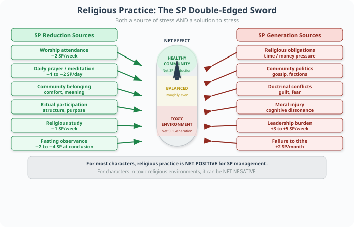
Religious practice is a double-edged sword for SP management:
- SP reduction: Worship, prayer, meditation, community, and meaning all reduce SP. A devout character can reduce 3–8 SP per week through practice alone.
- SP generation: Religious obligations, community politics, doctrinal conflicts, guilt, fear, and moral injury all generate SP. A devout character can gain 2–5 SP per week from religious stressors.
- Net effect: For most characters, religious practice is net positive for SP management (more reduction than generation). For characters in toxic religious environments, it can be net negative — the source of their stress rather than the solution.
Never present any religion as inherently good or bad. The mechanics should reflect that religious experience varies dramatically based on which community, which tradition, and which individuals are involved.
Ask players about their real-world relationship to religion during character creation. Some players will want to explore faith; others will want to avoid it entirely. Respect both.
Use the SBNR path as a bridge for players who find meaning in spirituality but have negative associations with organized religion.
Religious trauma is real. If a player indicates they have religious trauma in their own life, offer the option to veil (skip) all religion-related content. Their character can simply not engage with religion — that's a valid life choice.
Quick Reference: Religious Practice SP Summary
Weekly worship
Frequency: Weekly · Time: 3–5 hrs · Cost: $0–20
SP: −2 SP
Daily prayer/meditation
Frequency: Daily · Time: 10–60 min · Cost: Free
SP: −1 to −2 SP/day
Religious study
Frequency: Weekly · Time: 2–4 hrs · Cost: Free–$50
SP: −1 SP (if consistent)
Community volunteering
Frequency: Monthly · Time: 2–5 hrs · Cost: Free
SP: −1 SP per event
Religious holidays
Frequency: Annual · Time: 1–3 days · Cost: $200–2000
SP: ±2 to ±5 SP
Fasting observance
Frequency: Annual/periodic · Time: 1 day–30 days · Cost: Free
SP: −2 to −4 SP at conclusion
Tithing / donations
Frequency: Monthly · Time: — · Cost: 10% of income
SP: None directly (but failure to tithe = +2 SP)
Meditation (SBNR)
Frequency: Daily · Time: 20–60 min/day · Cost: Free–$20
SP: −2 SP/week at Level 2+
Nature immersion (SBNR)
Frequency: Weekly · Time: 2–4 hrs · Cost: Free
SP: −2 SP/week
Yoga (SBNR)
Frequency: 2–5x/week · Time: 1–5 hrs · Cost: $50–200/month
SP: −2 SP/week